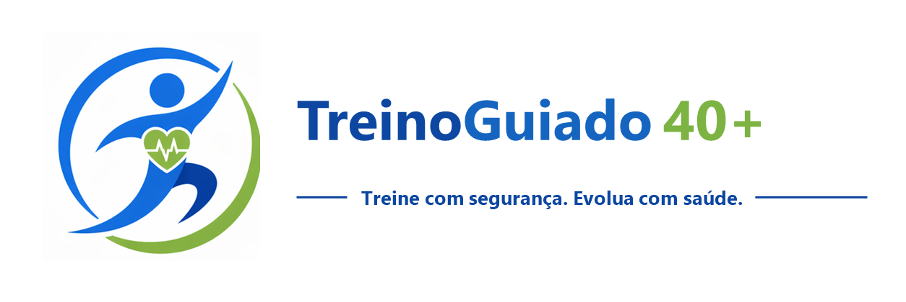

Pessoas acima de 40 anos
Treinos organizados em ciclos, com progressão mais clara e espaço para registrar como o corpo respondeu.

Plataforma web de treino seguro
Organize treinos, acompanhe peso, dor, glicemia e evolução em ciclos. Uma base preparada para aprender com cada treino realizado.
Para quem
Treinos organizados em ciclos, com progressão mais clara e espaço para registrar como o corpo respondeu.
Acompanhamento de peso, meta e evolução sem reduzir o processo a um único número.
Preparado para registrar glicemia em momentos importantes, além de exames como glicemia de jejum e HbA1c.
Biblioteca de exercícios com cuidados e atenção a quadril, joelho, lombar, ombro e sinais de alerta.
Plataforma
O TreinoGuiado já nasce como uma plataforma web para montar treinos e registrar evolução. A próxima fase adiciona análise comparativa e sugestões com IA revisáveis.
Crie ciclos de 8 semanas, circuitos A/B/C/D/E e treinos completos com exercícios, séries, repetições, descanso e carga sugerida.
Abra o treino do dia, marque exercícios concluídos e registre carga usada, repetições feitas, dor antes/depois, cansaço e observações.
Acompanhe peso, meta, glicemia capilar, glicemia de jejum, HbA1c e sinais de dor para entender melhor a evolução.
As futuras sugestões com IA usarão perfil, objetivos, limitações, histórico de treino e biblioteca curada de exercícios, sempre com revisão antes de salvar.
Responsabilidade
O TreinoGuiado 40+ é uma ferramenta de apoio. Não substitui orientação médica, nutricional ou de profissional de educação física, especialmente em caso de dor, hipoglicemia, tontura, sintomas ou restrições clínicas.
Roadmap
Biblioteca de exercícios, ciclos, treinos completos, modelos de circuito e registro do treino realizado.
Comparação de glicemia antes/depois do treino e evolução por 3 meses, 6 meses e períodos maiores.
Agente que lê perfil, objetivos, dores, limitações e histórico para gerar rascunhos revisáveis de novos treinos.
Recursos para personal trainers, profissionais e pequenas academias acompanharem alunos, progresso e frequência.
Contato
Fale com a Codertec pelo WhatsApp ou acesse o web app quando o domínio estiver disponível.